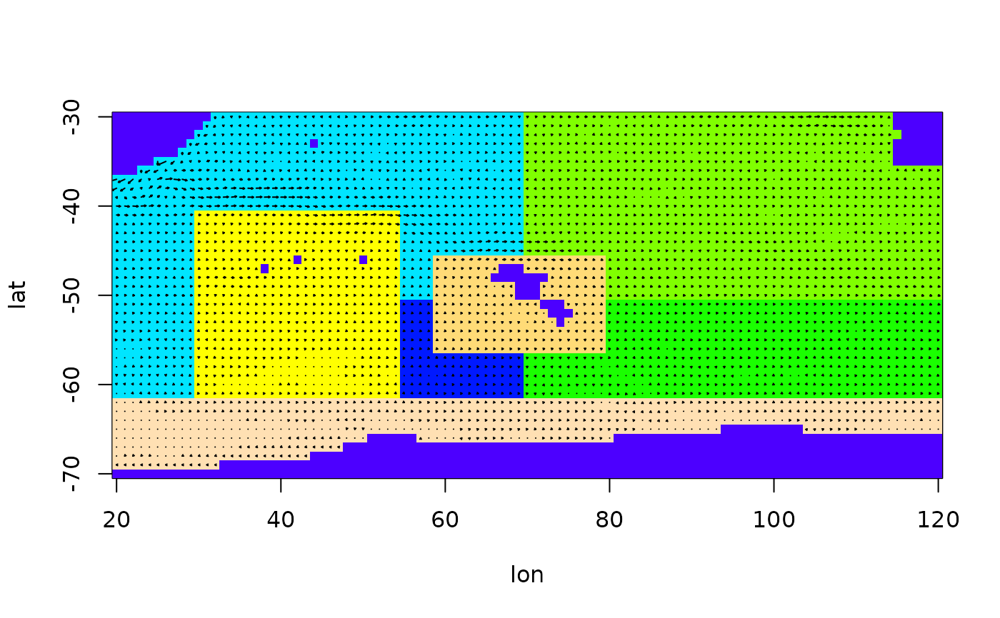
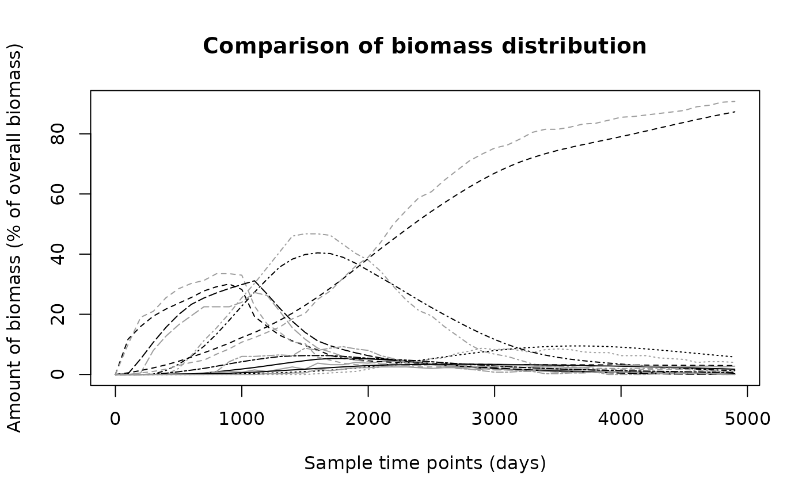

particle.tracking.compare.RdThis functions tracks the movement of biomass through the given polygons by following the proportionate distribution of a large number of passive drifter (small fluid parcels) trajectories, which are calculated using a 4th-order Runge-Kutta integration scheme.
particle.tracking.compare(arena, num_particles, t_step, end_t_counter,
start_setup = NULL, infl_poly = 1, infl_time = 10, subdiv = NULL,
diffusion = 0, silent = TRUE, graphics = FALSE)An object of class arena, see details.
The number of particles used.
The time step in which the results should be presented.
The number of time steps that should be recorded.
A vector giving a starting biomass distribution. Specify either this or the next two arguments.
The polygon into which the biomass enters. Has to have positive inflow from the outside.
The number of time steps over which the biomass is to be inserted.
The number of Runge-Kutta time steps per recorded time step. See details for the default value.
The coefficient of diffusion, see details.
If silent is FALSE, the movement of the biomass will be shown graphically, with the user having to hit 'enter' after every time step
If graphics is TRUE, the remaining particles at the end will be shown. A plot of of the arena has to be done before.
A matrix of dimension 'number of polygons' x 'number of time steps', where the last polygon is the 'outside'. Each column holds the biomass distribution in the respective time step.
There are two different starting conditions for the flow of biomass: A starting distribution can be given or the biomass can flow into the area through a specified inflow polygon in a certain number of time steps.
A call to the C-function particle\_tracking\_compare\_inflow does the
bulk of work, which is a lot faster than the same implementation in R due to
the greatly increased efficiency of 'for' loops. It is important to note
that in the present form, particles can get caught in 'voids' in the flow
field, i.e. in places where their velocity is 0. If this happens for too
many particles (a warnings message is given at the end, indicating the
number of particles left in the domain), the estimation should be repeated
with a higher values of diffusion.
There is considerable space for improvement in replacing the fixed time step Runge-Kutta scheme with a more sophisticated numerical integrator. However, this requires some fiddling with the underlying C functions and has not been tried yet.
An arena object describes the arena in which the function is to be
used. It is a list containing elements lat, lon, U,
V and S (in that order), where lat and lon are
vectors storing the latitude and longitude values of the grid points used,
U and V are matrices with the corresponding flow velocities in
west-east and south-north direction, and S is a matrix in which each
grid points has an integer number, either giving the polygon it belongs to
(if > 0) or stating that this grid point lies on land (if == 0).
The default value for subdiv is choosen in such a way that a particle
will on average move for 1/10 of the distance between two grid points in
each time step. Although a variable time step would be preferable, this
yields an accurate estimation in most cases.
Diffusion is included by adding the product of a normal random variable and the mean velocity to the calculated velocity in either direction. The diffusion coefficient gives the standard variation of the normal random number. Diffusion is needed to get particles out of 'voids', i.e. places in the flow field where the adjacent velocities cancel out and the particles get stuck.
TODO: My report
biomass.tracking,
particle.tracking.compare, biomass.compare,
prepare.arena
data(Udata)
data(Vdata)
data(Sdata)
arena = prepare.arena(Udata,Vdata,Sdata)
plot(arena)
# Use more particles if realistic results are needed
mk = particle.tracking(arena,400,5000,diffusion=0.6,graphics=TRUE)

# Now estimate the biomass movement
N1 = biomass.tracking(mk,seq(0,4900,by=100),infl_poly=2)
# Get a particle tracking result to compare the above to
N2 = particle.tracking.compare(arena,400,100,50,diffusion=0.6,infl_poly=2)
#> Warning: Particles left in domain after the time for particle tracking elapsed:
#> Warning: 33
# Compare the results
biomass.compare(N1,N2)

#> [1] 49.627705 2.090415